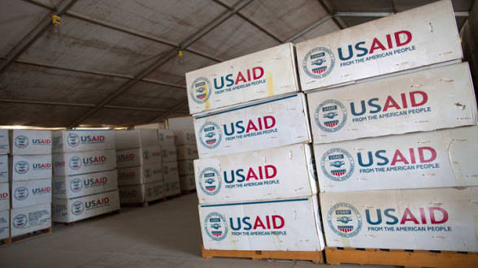

.jpg)
Products, solutions and services that leverage on innovation in security, entertainment, construction, information and communication technology.


TORYIMA Net. ltd provides the resources and expertise to plan, design and implement communication solution for its clients.
We provide TELEPHONE EXCHANGE within any system as the need may be.
TORYIMA Net. ltd embraces surveillance for our clients in areas which need security.
TORYIMA Net. ltd has expertise and experience in the design of UTP PDS
Our mass areas of expertise in this strategic Business unit include installation of cable networks (copper and optic fiber) and microwave related work.
TORYIMA Net. ltd places a lot of importance on of her personnel, the work environment and Community where the work is carried out
TORYIMA Net..
is an indigenous company that provides ICT and telecommunication based solutions , with a staff
strength of over 20 permament and contract personnels , TORYIMA Net. is one of the leading
indigenous
companies offering qualitative and cost effective services in network implementation and management
, Telecommunication infrastructure development , External line plant , Optic fibre and installation
, cell site deployment and consultancy.
At TORYIMA Net.. our scope of operations covers the entire nation as we are able to
deploy
immediately to clients needs as soon as we are called upon.

Our solutions are well secured and resillent against potential harm or other unwanted co-ercive change frome external forces.
Simple and very easy to use solutions with excellent user experience and comprehensive navigation tips.
Creativity is fundamental to our core services .The solutions we provide are full of ideas strategicallly ochestrated by our best minds in the industry.
99% of our satisfied clients always return for more services because of the trust that we have built over the years.
Our goals are achieved by applying our technical competencies, industry know- how, and liaisons
We can only provide what you want us to provide. We are skilled in Network Implementation & Management, Telecommunication Infrastructural Development, External line plant, Optic Fibre and Installation ,Cell site deployment and Consultancy.




TORYIMA Net.. is a trusted Networking Agency with diverse knowledge about what they do. We entrusted our ICT project into their hands and they delivered convenient services.
Adamu A.oDo business with the TORYIMA Net.. team. It was a very swift yet productive experience doing business with them.
Mr chigbu A.oWith dogedness and intense allacrity do TORYIMA Net. do their job to the admiration of their clients . I dont regret partnering with them.